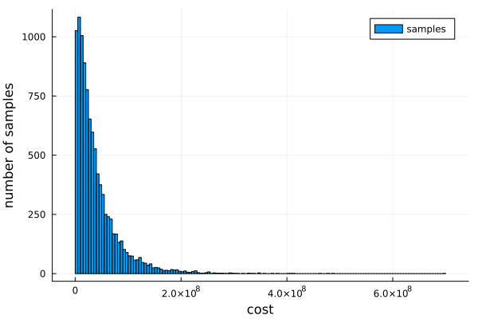

author: niplav, created: 2024-01-30, modified: 2025-06-20, language: english, status: draft, importance: 5, confidence: certain
I collect civilizational inadequacies and perform an inadequacy analysis on some of them.
$\frac{1 \text{ warning}}{\text{person} \cdot \text{day}} \cdot \frac{2 \text{ unskilled labor seconds}}{\text{warning}} \cdot \frac{1 \text{ unskilled labor hour}}{3600 \text{ unskilled labor seconds}} \cdot \frac{365 \text{ days}}{\text{year}} \cdot 4 \text{ years} \cdot 4 \cdot 10^8 \text{ persons} \approx 3.25 \cdot 10^8 \text{ unskilled labor hours}$$\frac{5€}{\text{unskilled labor hour}}$ is ~1.6 bio. €$\frac{5 \text{ unskilled labour hours}}{\text{person}} \cdot 3 \cdot 10^8 \text{ persons}=1.5 \cdot 10^8 \text{ unskilled labour hours}$$\frac{5€}{\text{unskilled labor hour}}$ this is ~7.5 bio. €Velcro shoes are faster to close/open than shoes with shoelaces (I'd guess ~4 seconds vs. 20 seconds for closing), but velcro is slightly more expensive to produce (my gut guess is that it's not much, maybe a dollar more?) and current aesthetic sensibilities speak against it.
With a squiggle model based on an AI-generated model, I estimate that the annual benefit of switching to velcro shoes would be worth \$80B in expectation (5th/50th/95th percentile: \$-34B, \$66B, \$260B), assuming that aesthetic costs are on average \$10/year, and normally distributed.
A breakdown of the different types of costs reveals that manufacturing costs are mostly negligible:
Aesthetic costs exceeding $25/person-year render the mean & median value of switching to velcro negative. My hunch is that if humanity did switch, velcro shoes would become at least aesthetically neutral within a decade45%, plausibly being regarded as coller/more beautiful than shoes with shoelaces30%.
Relevant further question: Does velcro break more quickly/easily?
Ceramic/porcelain plates and cups made of glass break easily, while the æsthetics we have around them seem mostly path-dependent (and perhaps even caused by their fragility, leftovers from a time where fragile tableware signaled wealth).
Cooling: Generally, porcelain plates have the advantage
that food placed on them cools less quickly. Wikipedia states
that
porcelain has a thermal conductivity of ~1.4 to 1.9
$\frac{W}{K \cdot m}$ at ~400 Kelvin, and pyrex
glass variants have thermal
conductivities of 1-2 in the the range 273-373 Kelvin, while Aluminium
(a contender for a substance out of which to make plates, glasses &
cups) has a thermal conductivity of ~100 $\frac{W}{K \cdot m}$ at
273 Kelvin — which leads to faster cooling, and colder food is less
enjoyable to eat. However, we don't have to be stupid about this:
plastics lose heat even more slowly than porcelain (generally with
thermal conductivities <1).
Æsthetics: The other advantage of porcelain and glass is that they just look so much nicer. I don't have any strong rejoinders here, my æsthetics rejoice in knowing that I'm doing a thing that is more economical—but I acknowledge that I'm in the minority there. The only guidepost I can offer is to look at the price and then ask: "Are the æsthetics worth this price?" If yes, go ahead! If not, I may have pointed out something interesting.
Code for a slightly more complicated Fermi estimate, (mis)using the probabilistic programming language Turing.jl:
using Turing, Plots
@model function ceramic_glass()
people ~ Normal(8*10^9, 0.05)
meals_per_day ~ truncated(Normal(2.5, 1), lower=0)
proportion_tableware_users ~ Beta(5, 2.5) # Mean ⅔
breakage_per_meal ~ Beta(1.5, 1000) # Mean ~0.0015
cost_per_tableware ~ truncated(Normal(2, 0.5), lower=0) # In dollars
end
chains = sample(ceramic_glass(), IS(), 10000)
sampled=get(chains, [:people, :meals_per_day, :proportion_tableware_users, :breakage_per_meal, :cost_per_tableware])
total_cost_per_day=sampled[:people] .* sampled[:meals_per_day] .* sampled[:proportion_tableware_users] .* sampled[:breakage_per_meal] .* sampled[:cost_per_tableware]
mean(total_cost_per_day)
4.00195809996674e7
gui(histogram(total_cost_per_day, label="samples", xlabel="cost", ylabel="number of samples"))

And using squigglepy:
import squigglepy as sq
import numpy as np
import matplotlib.pyplot as plt
people=sq.norm(mean=8*10**9, sd=0.05)
meals_per_day=sq.norm(mean=2.5, sd=1, lclip=0)
proportion_tableware_users=sq.beta(a=5, b=2.5)
breakage_per_meal=sq.beta(a=1.5, b=1000)
cost_per_tableware=sq.norm(mean=2, sd=0.5, lclip=0)
total_cost_per_day=(people*meals_per_day*proportion_tableware_users*breakage_per_meal*cost_per_tableware)@100000
np.mean(total_cost_per_day)
40423162.50675405
This is a clear case of where estimational programming has a strong advantage over probabilistic programming.
Note that this code only estimates the costs of fragile tableware, and makes no statements about the costs of e.g. switching to alternative materials.
I use the term "civilizational adequacy" in a very strict sense here: Areas where our world surprisingly overperforms, implementing policies or having institutions that, given one were to observe them, would indicate our civiliation being adequate in many other dimensions too. "Mundane" but still impressive infrastructure doesn't count, even though it's really good. See also Croissanthology 2024.